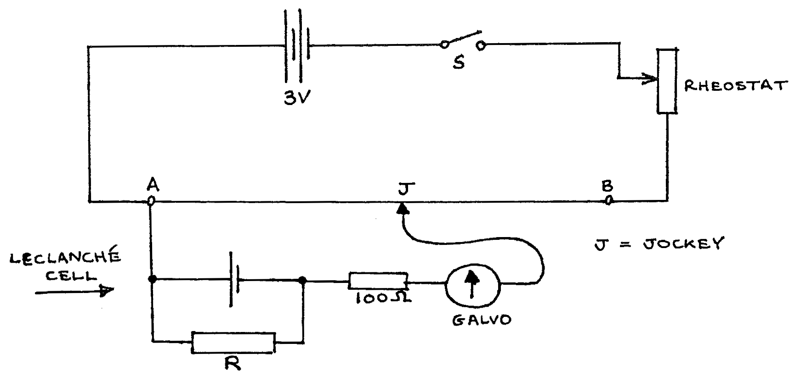
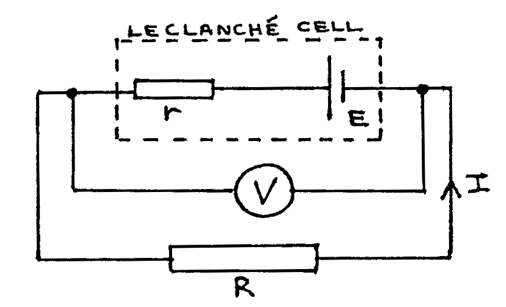

F2-1: Determination of the Internal Resistance of a Cell Using a Potentiometer¶
Apparatus¶
Leclanché Cell (filled to bottom of paint line with saturated Ammonium Chloride solution); metre bridge board; \(3\text{V}\) battery (fresh cells); jockey; switch; galvanometer with \(100\Omega\) series resistor; rheostat (\(\sim 15 \Omega\) resistance); resistors values: \(5\Omega\), \(10\Omega\), and \(20\Omega\); block with crocodile clips (for resistor); connecting leads (3 long, 7 short); 1 sheet graph paper.

Procedure¶
- Construct the above circuit, with \(R =\infty\Omega\). Close the switch S. After placing J \(5\text{cm}\) from B, adjust the rheostat until the galvanometer reads zero (balance point). Note the length \(l_{\infty} = \overline{AJ}\). Open S.
- Connect \(R = 30\Omega\), Close S, and find the balance point. Read \(l = \overline{AJ}\). Repeat with \(R = 25, 20, 15, 10, \text{and } 5\Omega\). Tabulate \(R\) and \(l\). Open S.
NOTE: After the experiment, empty the Ammonium Sulphate solution out of the cell again, to ensure a maximum lifetime for the solution.
Theory¶
Consider the lower branch of the circuit when the galvanometer reads zero. It is effectively disconnected from the top branch of the circuit:

Therefore:
And therefore:
However the length \(l\) is proportional to the potential difference \(V\), and when \(R=\infty\Omega\), \(V = E\). Thus let \(V = kl\) and \(E = kl_{\infty}\),where \(k\) is a constant. Therefore:
And therefore:
Analysis¶
- Plot a graph of \(\frac{1}{R}\) vs. \(\frac{1}{l}\) and find the gradient.
- Use the gradient, the value of \(l_{\infty}\), and the last equation in the theory only to find the internal resistance of the cell, \(r\).
Questions¶
- In the theory why can we say that the lower branch is ‘effectively disconnected’ from the top branch of the circuit?
- If the resistance of wire AB is \(2\Omega\) and its length is \(100\text{cm}\), find an expression for \(k\) in terms of \(V_{AB}\) only.
- Compare the Leclancé Cell and the modern Dry Cell. List a) the similarities and b) the differences.
- Define a) internal resistance and b) electromotive force. Thus explain carefully why in the theory, when \(R =\infty \Omega\), then \(V = E\).